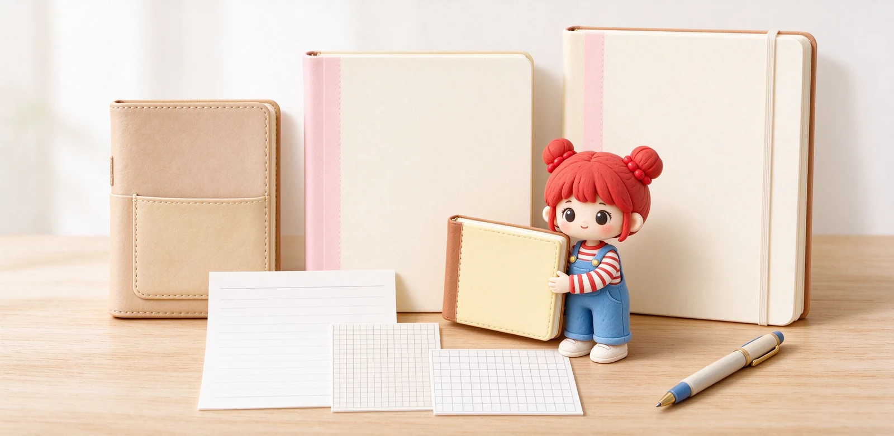

語意摘要：選筆記本的順序是用途優先、尺寸其次、版型再次、預算最後。學生課堂筆記用 B5 最通用，随身紀錄用 A5，口袋隨手寫用 A6；空白適合畫圖與自由書寫，細線格適合大量文字，方格適合筆記整理與手帳。先想清楚要寫什麼、放哪裡，比選一本漂亮的封面重要得多。
為什麼「先看用途」才不會後悔
很多人挑筆記本的順序是：看到可愛封面→翻一下內頁→價格可以就買。結果回家發現本子太大塞不進包包、或方格太小寫不下自己的字。問題不在本子，在於一開始就沒想清楚這本要拿來幹嘛。
比較穩的順序是：用途（寫什麼）→攜帶（放哪裡）→尺寸→版型→預算。用途決定你需要多大的寫字面積，攜帶決定你能不能每天帶它出門，尺寸與版型只是把這兩件事落地。
尺寸怎麼選？B5、A5、A6 對照
台灣最常見的三個尺寸是 B5（約 182×257mm）、A5（148×210mm）、A6（105×148mm）。數字越大越能寫、也越重。原則很簡單：固定在桌面寫選大的，每天帶出門選小的。
| 尺寸 | 大約大小 | 適合場景 | 攜帶 |
|---|---|---|---|
| B5 | 182×257mm | 學生課堂筆記、讀書重點整理 | 放書包剛好，平常帶出門偏大 |
| A5 | 148×210mm | 工作筆記、手帳、隨身紀錄 | 放側背或手提包，最萬用 |
| A6 | 105×148mm | 靈感隨手記、清單、口袋筆記 | 可塞大衣口袋或小包包 |
| A4 | 210×297mm | 報告草稿、設計草圖 | 通常留桌面，不随身 |

版型差在哪？空白、細線格、方格
內頁版型決定你寫字時「被引導的程度」。空白最自由但容易寫歪，線格給你一條基線好寫齊整，方格則在自由與整齊之間取得平衡。
- 空白（無線）：適合插畫、驢寫、喜歡隨意配置的人，缺點是新手容易越寫越斜。
- 細線格（6～7mm 橫線）：學生筆記最常見，一行一行寫整齊，適合大量文字。
- 方格（5mm 方格）：畫流程圖、心智圖、手帳排版都好抓位，近年最受手帳族歡迎。
- 點線（dot grid）：線條不明顯，視覺乾淨又能對齊，是方格的變形。
用途對號入座：學生、上班族、手帳族
學生與讀書筆記
主需求是寫得多、便宜、好抄。B5 細線格或方格是安全牌，一本 100 張以內、單價 100 元上下的校園筆記本就很夠用，不需要一開始就上昂貴的進口款。
上班族會議筆記
主需求是能放進公事包、翻開平貼、有質感。A5 方格或點線最實用，方便會議中畫結構圖；預算夠可挑能 180 度平攤的款式，寫字才不會被書溝卡住。
手帳與自我管理
主需求是有日期、有月週計畫格式，或乾脆空白讓你自己排。這已經接近「手帳」而非一般筆記本，我們另外有一篇專門講手帳版型怎麼選。
預算與 CP 值：300 元以內怎麼花
日常大量使用的筆記本，其實不需要太貴。以台灣常見價位來說，KOKUYO Campus B5 校園筆記本一本約 60 到 100 元，紙質順、平價好用；進一步到 200 到 300 元，可以買到附書籤帶、彈性束帶的設計款。
- 先決定用途與攜帶方式，縮小到一個尺寸。
- 從版型三選一：細線格、方格或點線。
- 拿內頁紙在光線下看一下，太薄會透頁、太滑會暈墨。
- 試著把本子完全打開壓平，看會不會彈起來、書溝好不好寫。
- 確認以上都順手，再依預算選喜歡的封面。
常見問題 FAQ
第一次買筆記本，選 A5 還是 B5？
空白、線格、方格到底哪一種最好用？
筆記本一定要很貴才好寫嗎？
為什麼我的筆記本打開會一直彈起來？
鋼筆可以寫一般筆記本嗎？
資料來源與核實依據
- キャンパスノート B5 A罫・7mm 100枚（尺寸 252×179mm）（KOKUYO コクヨ）
- Best Papers for Fountain Pen Ink（Clairefontaine 90g、Midori MD 等比較）（Fountain Pen Revolution）
- MDノート A5 仕様（176ページ、尺寸與重量）（MD PAPER PRODUCTS / MIDORI）